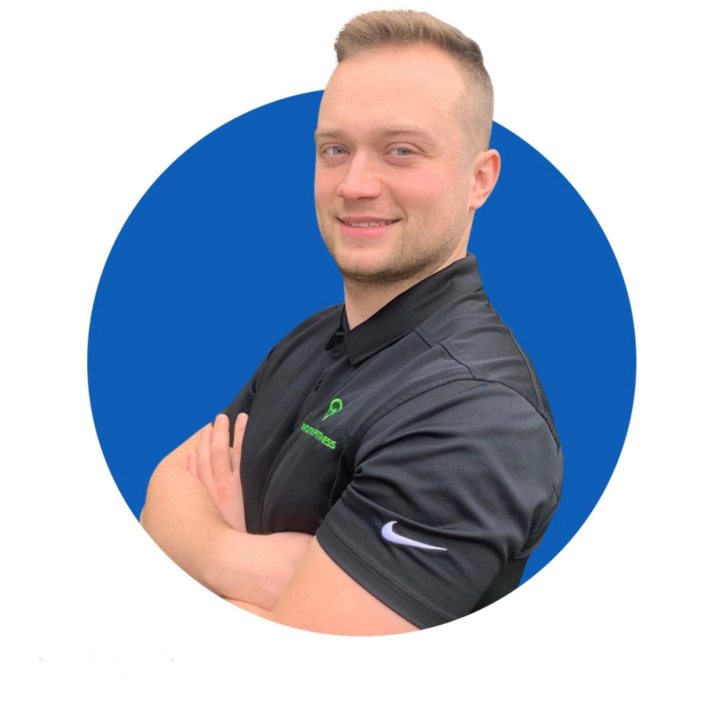
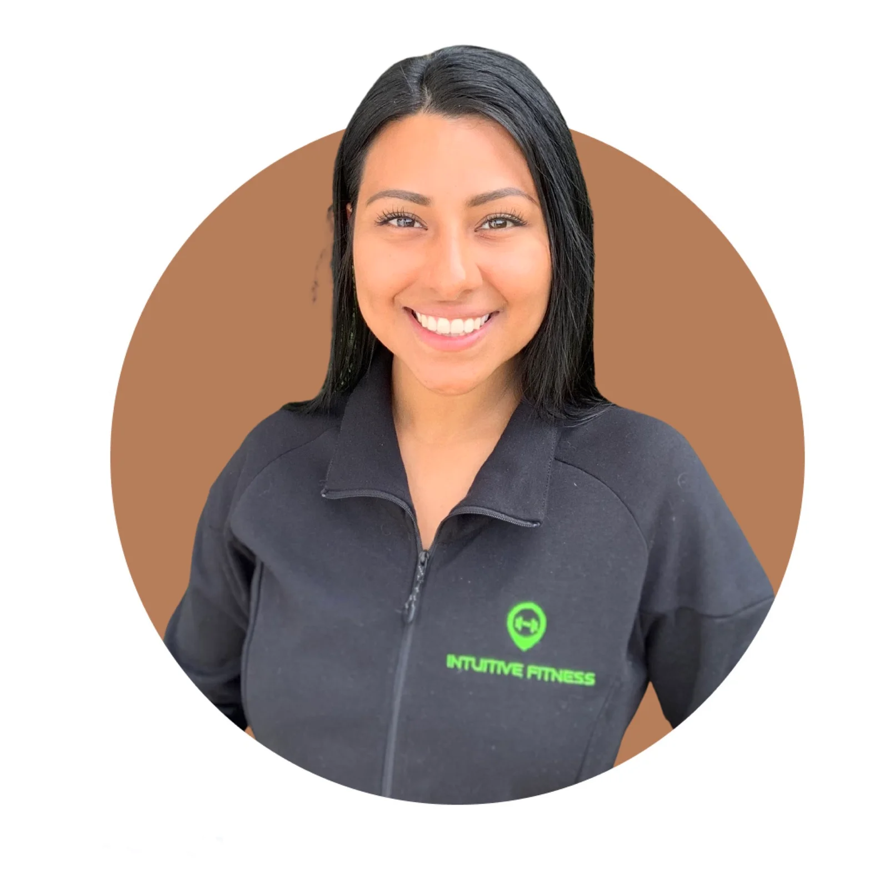

ABOUT INTUITIVE FITNESS
Julia and Tom Studzinski
Intuitive Fitness was created because Tom wanted a wider reach to help more individuals, and understood that working within a traditional gym had its limits. Gyms were too crowded for clients to get continued quality service, and clients had to pay gym membership fees on top of personal training rates. He wanted to inspire others who may not be members of the gym or any fitness club; people who wanted a lifestyle change or to gain better movement habits, with no exercise history and no prerequisites required in order to see him. At Intuitive Fitness there are no membership fees, and there is total privacy within our private studio space or any in-home environment. There is no equipment necessary, and most importantly anyone can access affordable, professional, customized personal training.
MEET THE TRAINERS

Tom Studzinski - Owner/Trainer
“Health and fitness have always been a huge part of my life. In 2009, while going through an intense training regimen for junior Olympics in Tae Kwon Doe I developed a passion for traditional strength training and metabolic conditioning. My specialties include one-on-one personal training, small group training, kickboxing, kettlebells, weight training, form & technique correction, and Olympic Weight Lifting. My priorities when training my clients are to develop proper functional movement and form while completing exercises, correct muscle imbalances, decrease risk for injury, inspire positive lifestyle change and counsel clients on proper nutrition and exercise habits. I have worked with individuals from many walks of life, a variety of age ranges, from all fitness levels with success. I am very excited to continue my passion of helping others develop themselves and spread the power of health and fitness.” - Tom Studzinski
MEET THE ADMINISTRATION

Julia Studzinski - Owner/Administrator
Julia has worked in business administration and office management for 8 years and recently made the switch to join the Intuitive Fitness team! Julia operates the technical components of Intuitive Fitness, offers virtual assistance and does a little bit of marketing. Julia is passionate about the mental health benefits of exercise and is motivated by her strength journey as she continues to crush her fitness goals. During her off time she enjoys hiking, camping, skiing and puzzles.
"I was eager to help Tom with his decade-long passion of assisting others reach their fitness goals and even more excited to work along side him." - Julia Studzinski